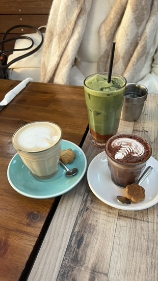
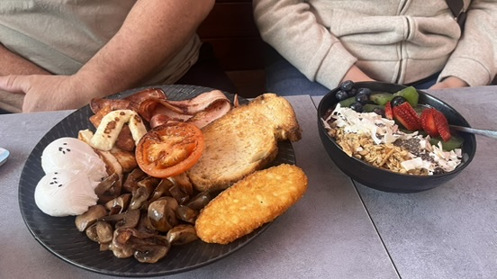
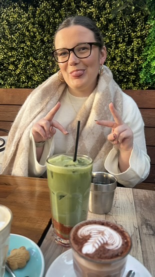
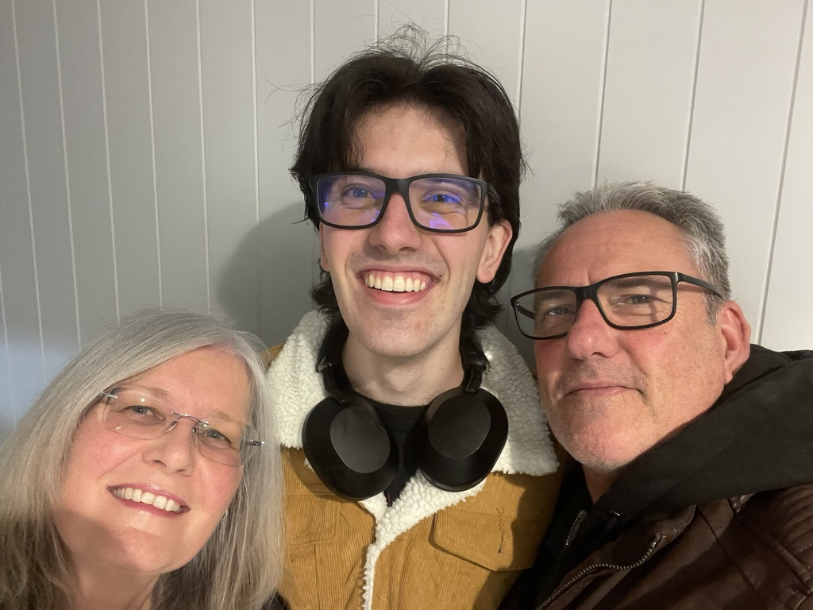
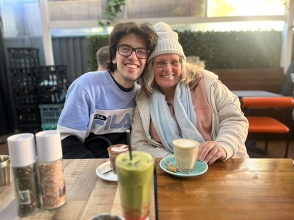

Hello Everyone!
Upon starting I note that last week was a lot, and I have backed that up with another week of large proportion. So I will start with the
surprisingly lightest aspect of the week
Work
From a work perspective this week has been another week to settle in for my newest role, this I expect to be a long process over the course of the rest of
the term but I can feel myself settling. While classes are off this week I have had lighter loads for both my work responsibilities, which has meant I can
assign my time elsewhere.
TEDxUNSW
Where the time was assigned was in large portion for TEDxUNSW. I started this Wednesday with a full day of training. I found this session
very valuable for our ability to connect with other societies and how to think about our future events. The speaker
was surprisngly very engaging and made what was a mandatory session, a memorable session. Our regular meetings the next Monday within my portfolio
are proving fruitful for progress and I hope these fruits come to seed with new website pages over the next few weeks as they
have been a long time coming.
The previous Thursday I additionally had
the opportunity to run a stall with the society for an event. This event was for the scholarship program which I recieved to get part of the
way to attend this University. I really appreciate these full circle moments to bring perspective. Remembering I was these nervous but excited
students not only 4 years ago. Now I am a University student with busy days and greater opportunity, emphasis on the busy.
Coursework
I ended lasts weeks blog with a promise, to knuckle down in my spare time, and I sure did. The more events I commit
to, to a point of course, the more drive I have to push myself to gain the full University experience, and that means the
grades too, hence I have knuckled down. This is not without challenge though and I think the biggest challenge has been
actually doing the harder work and not just reading my assignment spec, valuable but not of the highest important. I know
I can break this habit though as I did for my other course, which allowed me to have a very fun weekend.
College (Family Weekend)
As alluded to last blog this weekend my family came up for Family Weekend within the college. Having the ability to
give my family a glimspe into my life has been a massive joy, and the precursor to this blog. So I was very happy I spent
the time over the week to allow myself the ability to relax and be present. I think for this part it is better to paint a
picture of the weekend with photos and not words so below are a few favourties, and I hope that there is the ability to
continue the visits beyond the formally organised events.





Addtional Events
In addition to the many things above I have been attending a few careers events, in particular for the preparation of my
resume and interview preparation for a potential future scholarship I am eligible for, so more to come on that soon.
Song
A song I have enjoyed this week:
WHY ARE YOU HERE - 'MICO',
YOUTUBE LINK
Days
Days I am free if you want to catchup (HomeBase Next Week: Sydney Area):
- Friday 17th Morning or Evening
- Sunday 19th All Day
- Friday 24th Morning or Evening
- Tuesday 28th Morning
Upcoming Week
In the upcoming week I will do the more challenging work over the easy tasks because they are the better tasks for me.
Thank you for reading, I hope to continue these throughout the rest of the year so let me know of any tweaks I need
to make. Although I will note they might become fortnightly.
Shay.